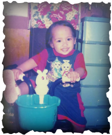
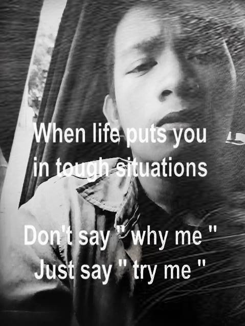
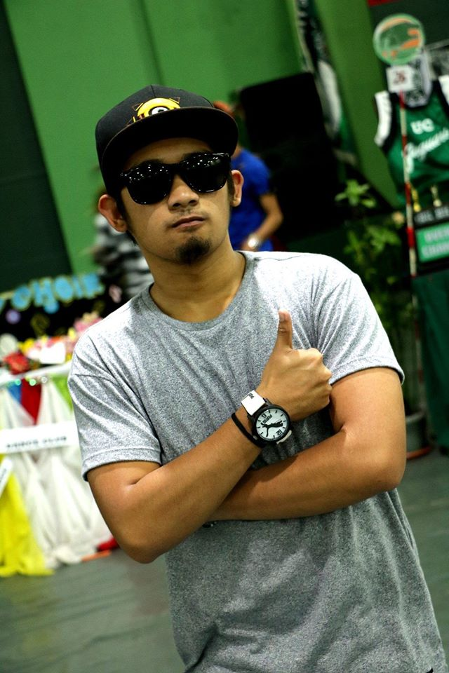

I’m Glen Hiquiana Kimpay and I’m a certified Christian. I was born in Abatan Hospital on the date of May 13 1998. Before I was born my mom told me that it was so risky because there are no available hospitals in their province that time so they need to take me to the next town which is the only nearest place they know that has available hospital in their place and that hospital is named Abantan Hospital. It was a fifty-fifty chance of survival but luckily thank God it was successful. I was raised by my parents but then my parents need help so they transferred me to their beloved cousins. Sometimes my parents visit me when they’re done with their work. That time, my mom is working on a fast food restaurant while my dad is working on a mine sight as planning engineer. We lived in the province of Lepanto, Mankayan, Benguet. Now, It is surrounded by developed structures that contributed by the different companies such as BENECO, MERALCO and likes. We are seven all-in-all in our family, five siblings (four boys and one girl) He is the youngest of all my siblings and my sister is the third one, as they say: ”A flower in the middle of the thorns”. As I mentioned earlier my father, Fernando Kimpay is working as a miner while my mother, Helen Kimpay is a hard working baker and a cook in a fast food restaurant in our province.
We transferred here in Baguio city in the year of 2010 in such a reason, My dad needed to go to abroad because of lack of money and planned to go to abroad for bigger work, so someone offered my dad a job in abroad so he also needed to retire in his old job in our province, so our contract in the apartment that we are living on that time has been terminated due to the retirement of my father so we needed to transfer here on Baguio city. I was active as a Boy Scout, Choir member and Student. I graduated from Lepanto Elementary School in 2009. I studied at the Lepanto National High School for one and a half year.
I was a member of a church organization that time but when we transferred here in Baguio City it was all ended. It was a hard decision. When we transferred here I became a loner and it is so hard to move on and adjust with the people and culture here on Baguio. I studied at Cordillera Career Development College for second year High School where I spent my whole batch of High School Life and I was bullied by certain bullies since..........
I transferred here till now, but I realized that it’s so nonsense that I am letting myself being bullied so I told them that they should stop it, because if they bully their neighbors they are bullying the creation of God and at the same time they are also bullying God by the time that they crucified him. That time they realize that and so ashamed of what they have done, so that time they already stopped bullying others and at the same time I meet new friends and they invited me to a ministry or organization that it is designed to collect Christians to serve God by Praise and Worship and that ministry is called “NewLife”. That time I already found where I can unleash my forgotten talent that I have been hiding since I transferred here, because when we transferred here I am no longer practicing my singing skills, so thank God that I found this ministry in order me to enhance and share my talents and at the same time serve God.
There are such problems in life and many trials that will test who you really are and there are those temptations, walls and problems that will stop you and test you but we should not let our selves to be carried by those trials through our future, dreams, and good desires. Yes, there’s too much problem in life but our lips should not know that, we must always smile because for I don’t smile to hide any pain, or laugh to hold tears back, I smile because I’m happy and laugh because I’m blessed. I think this is the end of my short autobiography of mine, Thank you.